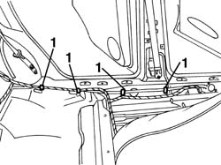
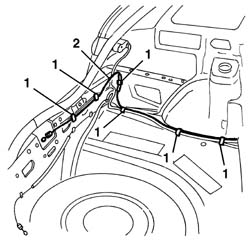

7015B44 tail gate catch control cable - r+r
- Path
- Procedures > 70 FITTINGS > 7015 TAILGATE/ > 7015B tailgate locking/opening devices > 7015B44 tail gate catch control cable - r+r
- Kind
- repair procedure (removal / refitting; the operation number is the code)
- Applies to
- all engines; all production periods
- Interactive page
- https://sloeber94.github.io/elrnDB-a156/en/#/3238715
Applies to: all engines; all production periods; only with equipment: Station Wagon
 Removing
Removing
 Refitting
Refitting7040L40 front compartment scuff strip - r r (left side)
- 7040L44 rear compartment scuff strip - r r (left side)
7040H36 central trim lower element - r r (left side)
7050A22 rear seat cushion - r+r (left side)
7045A10 l/h or r/h front seat (one) - r+r (left side)
5010C44 air diffuser to rear seat - r+r (left side)
7015B48 Tailgate OPENING CONTROL - R.R.
7040B22 luggage compartment/load platform moulding - r+r
7040B15 (One), rear side trim mounting BRACKET left or right - R.R . (left side)
7040B28 PET transport PROTECTION and load carrying compartment COVER COMBINATION BLIND - R.R.
7050A47 SIDE PANEL (one) for rear seat BACKREST., left or right - R.R . (left side)
7040B30 l/h or r/h side support (one) for load platform cover blind - arrange (left side)
7040B06 side trim (one) lh or rh, load compartment/load platform - r r (left side)
7015B18 tailgate lock striker - r+r
1. Release the transmission cable from the retaining clips along the left side panel.

Applies to: all engines; all production periods; only with equipment: Station Wagon
1. Release the transmission cable from the retaining clips in the load compartment.
2. Remove the transmission cable from the car.

Applies to: all engines; all production periods; only with equipment: Station Wagon
Refitting
RemovingCheck that the transmission cable is not damaged.
Place the transmission cable in its housing in the vehicle.
Secure the transmission cable in the load carrying compartment using the retaining springs.
Secure the transmission cable along the left side panel using the retaining springs.
7015B18 tailgate lock striker - r+r
7040B06 side trim (one) lh or rh, load compartment/load platform - r r (left side)
7040B30 l/h or r/h side support (one) for load platform cover blind - arrange (left side)
7050A47 SIDE PANEL (one) for rear seat BACKREST., left or right - R.R . (left side)
7040B28 PET transport PROTECTION and load carrying compartment COVER COMBINATION BLIND - R.R.
7040B15 (One), rear side trim mounting BRACKET left or right - R.R . (left side)
7040B22 luggage compartment/load platform moulding - r+r
7015B48 Tailgate OPENING CONTROL - R.R.
5010C44 air diffuser to rear seat - r+r (left side)
7045A10 l/h or r/h front seat (one) - r+r (left side)
7050A22 rear seat cushion - r+r (left side)
7040H36 central trim lower element - r r (left side)
- 7040L44 rear compartment scuff strip - r r (left side)
7040L40 front compartment scuff strip - r r (left side)
Topics linked from this page (13)
- 5010C44 air diffuser to rear seat - r+r
- 7015B18 tailgate lock striker - r+r
- 7015B48 Tailgate OPENING CONTROL - R.R.
- 7040B06 side trim (one) lh or rh, load compartment/load platform - r r
- 7040B15 (One), rear side trim mounting BRACKET left or right - R.R .
- 7040B22 luggage compartment/load platform moulding - r+r
- 7040B28 PET transport PROTECTION and load carrying compartment COVER COMBINATION BLIND - R.R.
- 7040B30 l/h or r/h side support (one) for load platform cover blind - arrange
- 7040H36 central trim lower element - r r
- 7040L40 front compartment scuff strip - r r
- 7045A10 l/h or r/h front seat (one) - r+r
- 7050A22 rear seat cushion - r+r
- 7050A47 SIDE PANEL (one) for rear seat BACKREST., left or right - R.R .